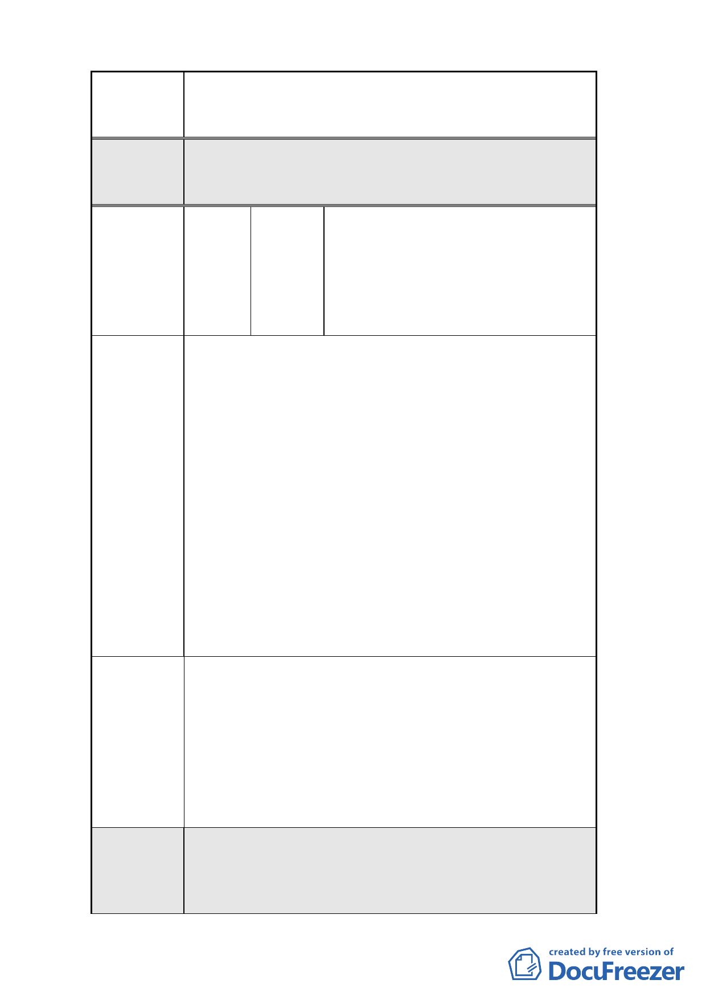

案名
變更臺北市南港車站特定專用區部分特定商業區及
部分體育場用地為道路用地暨修訂土地使用管制規
定計畫案
2.本案除特定商業區（A）建蔽率及最小建築基地規
模應依決議辦理，部分文字誤繕應予更正外，其餘
依市府公展計畫書圖內容通過。
特定商業區（B）：
全國加油站股份有限公司、黃清
編號
2
陳情人
柳、楊文義、詹至賢、詹西城
特定商業區（C）：
郭佩、陳哲雄、黃招治、詹至賢、
李吉福、黃幸貞
1.92 年 12 月 31 日公告之「擬定臺北市南港車站特定
專用區細部計畫案」規定：「為鼓勵本計畫區建築基
地以大規模方式進行開發，提高土地所有權人整合
意願，本計畫區內建築基地合併建築面積大於 4000
平方公尺以上者，給予基準容積 10％之獎勵」。
2.原細部計畫之特定商業區（B）及特定商業區（C）
之基地本為完整街廓，惟因特定商業區（B）及特
陳情理由 定商業區（C）中間為人行步道用地（台電地下管
線留設位置）及特定商業區（B）西側設置沉砂池，
故將此完整基地一分為四，個別基地面積因此未達
4000 平方公尺，以致無法申請規模獎勵甚感不解。
另由於特定商業區（B）土地所有權人計 5 人，特
定商業區（C）之土地所有權人計 6 人，因權利人
眾多且對於上述解釋結果更是認知紛異，致使整合
難度增加。
依據原細部計畫之特定商業區（B）及特定商業區（C）
之合併建築基地面積為：2114+1900＝4014（平方公
尺），已超過 4000 平方公尺，達規模獎勵值。故為鼓
建議辦法
勵本計畫區建築基地以大規模且完整方式進行開
發，提高土地所有權人意願，建議應將特定商業區
（B）及特定商業區（C）兩區塊得規範為整體街廓
開發或合併建築基地來整體開發，並給予基準容積
10％之規模獎勵，以達都市計畫之目的與精神。
1.本項建議經市府表示特定商業區（B）及特定商業
委員會 區（C）為人行步道用地阻隔，無法合併建築，依
決議
現行計畫規定原即無法適用合併獎勵。
2.本案除特定商業區（A）建蔽率及最小建築基地規
6